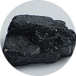
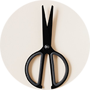

No Japão, Pedra, papel, tesoura é chamado simplesmente de "Janken" . Acredita-se que Janken basea-se em dois jogos Ken mais antigos, "Suu Ken" e "San Sukumi Ken". O San Sukumi Ken existiu no Japão desde tempos antigos, e o Suu Ken foi importado da China no fim do século XVII. Os jogos Ken começaram a aumentar em popularidade em meados do século XIX. Acredita-se que Janken foi inventado no fim do século XIX, julgando fontes textuais da época sobre jogos Ken.
Pedra
Papel
Tesoura
